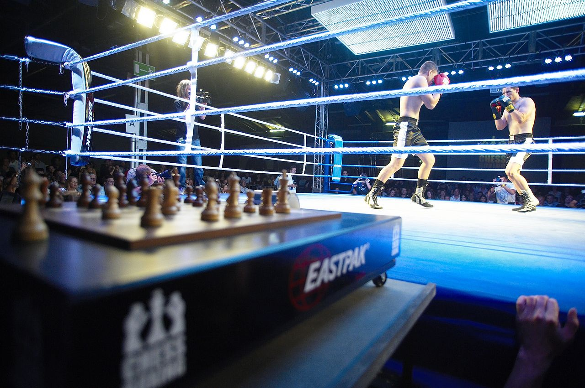

Mitä on shakkinyrkkeily?
Shakkinyrkkeily on laji, jossa yhdistyvät kaksi erilaista maailmaa: älyllinen strategiapeli shakki ja fyysinen kamppailulaji nyrkkeily. Ottelussa vuorotellaan shakkierien ja nyrkkeilyerien välillä. Laji vaatii kilpailijalta kykyä hallita sekä fyysistä rasitusta että tarkkaa keskittymistä edellyttävää strategista ajattelua. Ottelun aikana kilpailijan on sopeuduttava nopeasti muuttuviin tilanteeseen ja vaihdettava ajattelutapaa intensiivisen kamppailun ja rauhallisen pelistrategian välillä.
Säännöt
Shakkinyrkkeilyottelu koostuu enintään yhdestätoista erästä, joista kuusi on shakkia ja viisi nyrkkeilyä. Ottelu alkaa shakkierällä ja päättyy tarvittaessa viimeiseen shakkierään.
Shakkierät kestävät neljä minuuttia kerrallaan ja nyrkkeilyerät 3 minuuttia. Erien välillä on minuutin tauko jonka aikana varusteet vaihdetaan. Shakin aikana pelaajat käyttävät kuulosuojamia jotta he eivät kuule yleisöltä ohjeita. Pelaajilla on rajattu kokonaisaika (12 min) shakkisiirtojen tekemiseen. Tahallisesta ajanpeluusta seuraa 10 sekunnin ajanmenetysrangaistus. Nyrkkeily käydään amatööri -tai ammattinyrkkeilysäännöin. Otteluissa ja turnauksissa shakkikellon kokonaisajassa sekä siirtojen tekemiseen varatussa ajassa voi olla poikkeuksia.
Ottelu voidaan ratkaista seuraavilla tavoilla: tekemällä shakkimatti, shakkikellon ajan loppumisella, tyrmäyksellä, hylkäyksellä, luovutuksella tai tuomariäänin. Mikäli shakki päättyy tasapeliin eikä nyrkkeilyssä saavuteta selkeää ratkaisua, voittaja määräytyy nyrkkeilyn pisteytyksen perusteella.
Kilpailutasolla ottelijoilta edellytetään usein vähintään noin 1600 FIDE-pistelukua, jotta shakkierät voidaan pelata riittävä tasokkaasti.
